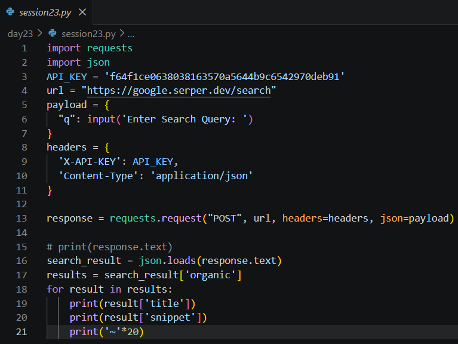
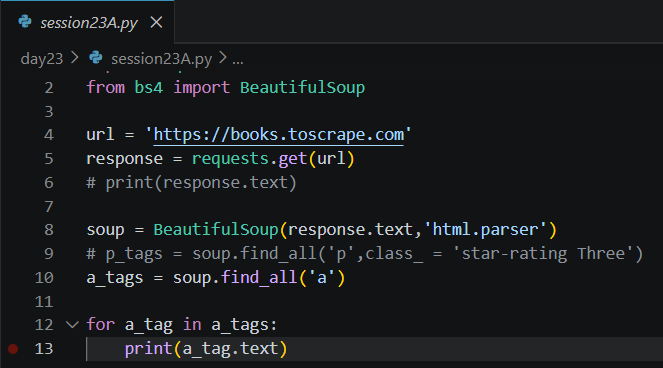

Date: 25th July 2026
Duration: 2 Hours
Training Company: Auribises Technologies
Trainer: Mr. Ishant Kumar
Today's session expanded the capabilities of Delegate AI by introducing techniques for retrieving information directly from the internet. Instead of relying solely on predefined databases, we explored how Python applications can communicate with external web services through REST APIs and extract information from websites using web scraping. These concepts enable AI agents to access real-time information and enrich their responses with external data sources.
We began by integrating the Serper Search API using Python's requests library. The application
sends a search query to the API as a JSON payload and receives structured search results in JSON format.
After parsing the response, the program extracts the organic search results and displays the title and
snippet for each result. This demonstrated how external APIs can provide reliable access to web search
information without manually scraping search engine pages.

The second part of the session introduced web scraping using the requests library together
with BeautifulSoup. We fetched the HTML content of a sample website and parsed its structure
using BeautifulSoup's HTML parser. By locating HTML elements such as anchor tags, we extracted and displayed
their text content, demonstrating how useful information can be collected from web pages when an API is not
available.

No separate assignment was provided. The session focused on understanding how external APIs and web scraping techniques can be integrated into AI applications to retrieve information from the internet.
View Delegate AI Project on GitHub
Today's session introduced an important capability for AI-powered applications: accessing external information sources. Learning how to integrate search APIs and perform basic web scraping highlighted two different approaches to retrieving online data. These techniques will be valuable for building more capable AI agents that can gather information dynamically rather than relying only on locally stored knowledge.
The next session will continue enhancing Delegate AI by introducing additional integrations and automation techniques that further expand the capabilities of the project.